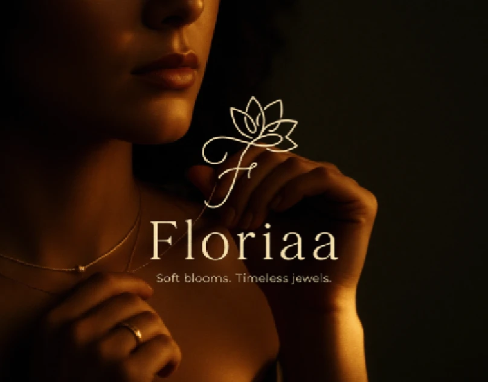
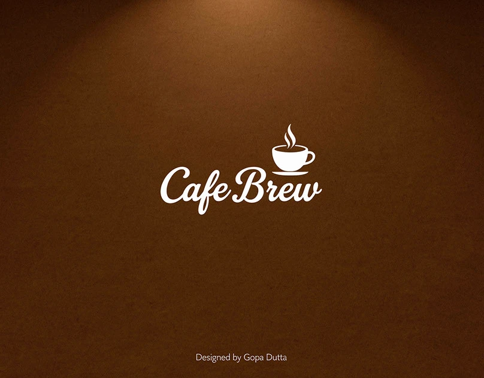
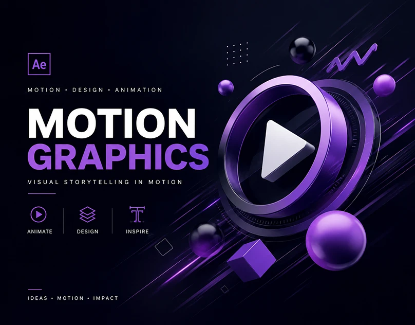
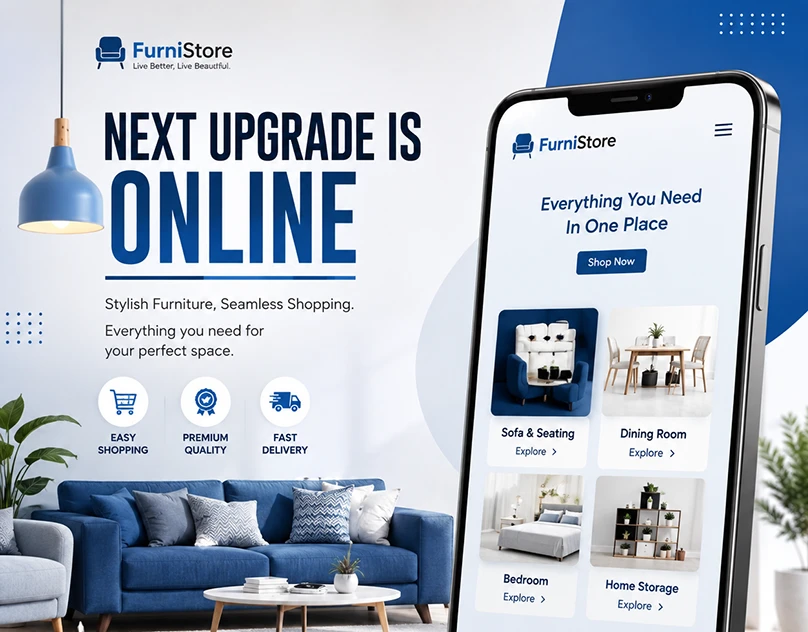
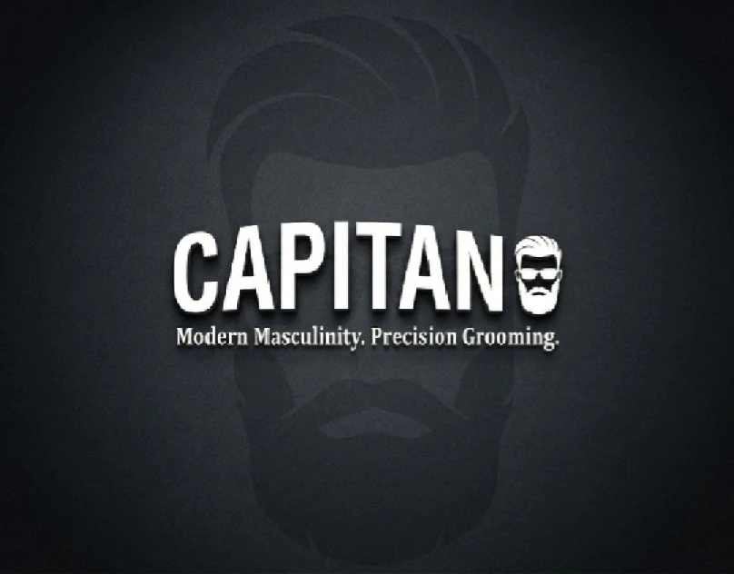
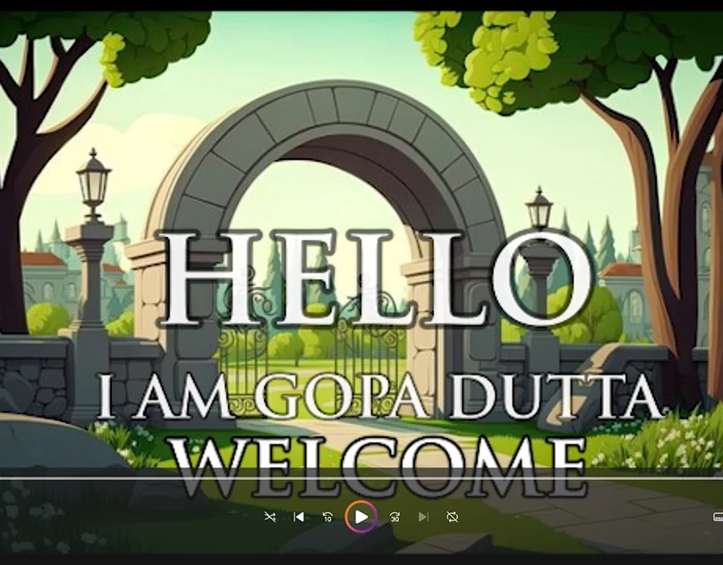
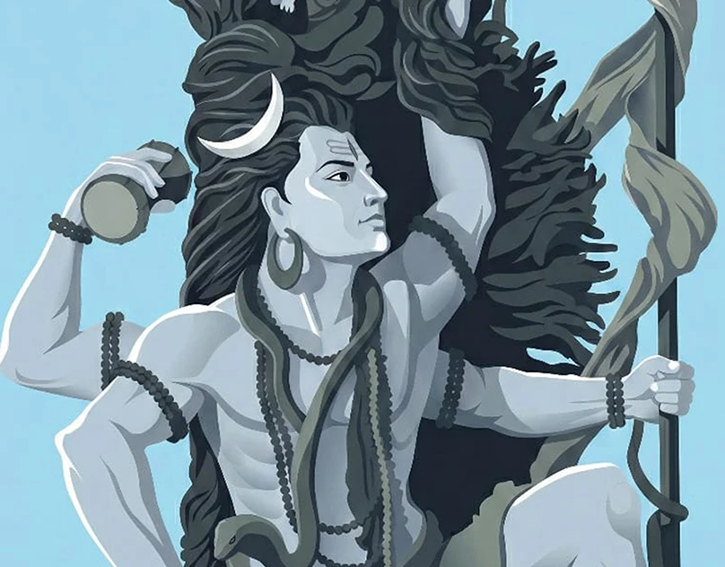
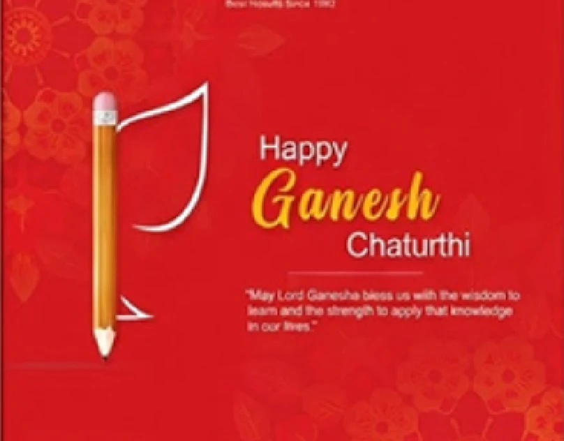

GRAPHIC DESIGNER · VIDEO EDITOR · MOTION ARTIST
Making ideas
impossible
to ignore.
I’m Gopa Dutta, a multidisciplinary creative turning stories into visuals that move, connect, and stay with you.
Based in Kolkata, IndiaAvailable for freelance & full-time
01 / SELECTED WORK
Work that speaks.
A mix of identity, digital design, illustration and motion. Explore each project here, then open its complete visual presentation on Behance.
04

Cafe Brew – Brand Identity Design
Brand identity · View project
Motion Graphics — Visual Animation
Motion graphics · View project
Social Media Design
Social media design · View project
Men’s Grooming E-commerce UI Design
UI design · View project
2D ANIMATION PORTFOLIO
2D animation · View project
Modern Vector Illustration Series
Illustration · View project
Event Day Social Media Post Designs
Social media design · View projectBotX Logo
Logo design · View project02 / ABOUT MECuriosity is
Curiosity is
my creative fuel.
G✳VISUALS THAT FEEL ALIVE
I bring design, editing and motion together to make communication feel a little more human.
From a brand's first impression to the last frame of a reel, I enjoy shaping ideas with clarity, character and purpose. My work spans social campaigns, brand identities, promotional videos, infographics and AI-assisted visuals.
I hold a B.A. (Honours) in English from the University of Calcutta. That storytelling foundation still shapes the way I design today.
20+clients served
2024professional start
∞ideas to explore
03 / THE TOOLKIT
Skills meet instinct.
A versatile toolkit, from the first sketch and layout to the final animation frame.
What I create
Graphic designVideo editingMotion graphicsBrand identitySocial media designUI / UX designLogo & thumbnail designPosters & bannersInfographics
AI creative practice
AI graphic designVideo generation & editingAI motion graphicsAI UGC videoAI content creation
Tools I work with
04 / THE JOURNEY
Where I've made my mark.
Hands-on work across design, video and digital content.
Graphics & Video Editor
YoForex Corp
Created reels, YouTube videos, promotional content, social graphics, brochures and banners, alongside motion graphics, infographics, AI visuals, animations and AI UGC videos.
Graphic Designer
Way2Admission
Designed social media posts, banners and print creatives while maintaining a consistent visual identity across marketing materials.
Independent creative work
20+ clients across industries
Delivered graphic design, video editing, motion graphics and branding projects for a range of clients.
05 / LET'S CONNECTHave a story
Have a story
to tell?
Let’s make something thoughtful, memorable and distinctly yours.
gopadutta1995@gmail.com ↗